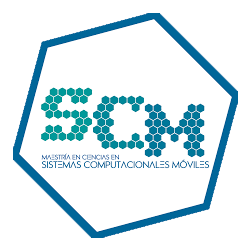

Escuela Superior de Cómputo
ESCOM was founded on August 13, 1993 and offers ISC, IIA and LCD degrees.

This program educates professionals with strong foundations in the design, implementation, and administration of computer systems.
This program trains professionals capable of designing, developing, and maintaining computer systems and technological infrastructures. Students gain solid knowledge in programming, databases, software engineering, computer networks, and cybersecurity. Graduates are prepared to innovate and optimize processes in both public and private sectors.

This cutting-edge program focuses on developing intelligent systems and AI-driven solutions. Students learn about machine learning, neural networks, computer vision, natural language processing, and robotics. Graduates are equipped to create smart technologies that solve real-world problems across various industries.

This program prepares professionals to extract meaningful insights from complex datasets. Students study statistics, data analysis, data mining, machine learning, and data visualization. Graduates are skilled in using data to drive strategic decision-making in areas such as business, healthcare, and technology.
Graduate Studies and Research Section (GSRS)
We welcome you to the SEPI of the Escuela Superior de Cómputo (ESCOM), which according to the tradition of the National Polytechnic Institute should be a leading institution of public technological education in Mexico and a leader in the generation, application, dissemination and transfer of scientific and technological knowledge; proposes as part of its natural growth in 2009 the Master of Science in Mobile Computing Systems, with the objective of training highly qualified and internationally competitive personnel, who contribute to generate, innovate and apply mobile computing in the resolution of the different needs of the country.
To train apt and qualified researchers in the area of mobile computational systems and to develop in the student a high capacity for professional practice.
To consolidate the Master's program and become a national reference on computer systems technologies, as well as to train quality graduates who contribute with their knowledge and skills to meet the current and future needs of the country.

To train leading professionals in technology and mobile computing systems who can contribute to and promote the technological development of the country.